Antes de empezar: la pregunta que no tenía respuesta
Hay preguntas que parecen sencillas hasta que intentas responderlas. ¿Cuánto cuesta una casa en La Habana? Todo el mundo tiene una cifra en la cabeza, y casi todos la defienden con seguridad. Que si en Playa está carísimo, que si en Centro Habana se consigue algo razonable, que si todo depende de si el agua llega o no llega. Pero cuando fui a buscar de dónde salía esa seguridad, me encontré con un vacío: no había una tabla que reuniera los precios, ni una estadística a mano, solo anuncios sueltos, mensajes y opiniones.
Y un anuncio es una historia contada a medias. Alguien decide qué enseñar (la terraza, el gas, el garaje) y qué callar (el estado de la cocina, el motivo de la venta, el trámite pendiente). Me pregunté qué pasaría si juntaba muchas de esas historias y las miraba con lupa: cuánto piden de verdad, qué dicen las inmobiliarias que las conocen por dentro y qué piensa la gente que busca casa.
Esa fue mi motivación, y era doble. Quería responder una pregunta que le importa a mucha gente. Y quería aprender a trabajar con datos reales, que llegan desordenados, pequeños y a veces equivocados, que es como llegan casi siempre. Lo hice para la asignatura Introducción a la Ciencia de Datos, íntegramente desde un teléfono Android, con Python en PyDroid 3 y con la ayuda de inteligencia artificial para organizar, programar y redactar (los datos, las entrevistas y la revisión de cada cifra son míos). Un aviso antes de seguir: los datos me desmintieron antes de darme la razón.
Para quién es esta historia
Para quien piensa comprar o vender. No es una tasación ni sustituye a un especialista, pero te dice qué mirar, qué ignorar y por qué un anuncio no cuenta toda la historia.
Para el profesor y el tribunal. Aquí está el recorrido completo: cómo se recogieron los datos, cómo se corrigieron, qué se pudo concluir y qué no.
Para quienes estudian datos. Es un ejemplo de lo que pasa cuando los datos reales son pequeños, desordenados y a veces equivocados.
Cómo leer esta historia
La pregunta principal se descompone en 30 preguntas, repartidas en seis capítulos. Cada una tiene una respuesta corta, el dato que la sostiene, un gráfico cuando lo hay y una nota sobre qué tan firme es. Tres reglas del juego:
Los precios son de oferta, lo que se pide, no lo que finalmente se paga.
Uso la mediana y no el promedio, porque unos pocos precios altísimos engañan al promedio.
Con menos de 5 anuncios en un grupo no concluyo nada.
El proyecto en cifras
92anuncios de venta analizados
25,000 USDprecio mediano de una vivienda
17%precios que hubo que corregir
4 vecesla mediana de las zonas caras (60,000 USD) frente al resto (15,000)
35personas entrevistadas
5inmobiliarias o gestoras
30preguntas respondidas
0 de 92anuncios que mencionan la emigración
Las fuentes
92 anuncios de venta de Revolico, extraídos con un programa en Python y revisados uno por uno. Una segunda extracción de 78 anuncios sirvió de contraste.
35 personas entrevistadas, en persona y por WhatsApp, con un cuestionario de 5 preguntas.
5 inmobiliarias o gestoras, con entrevistas parciales y distintas entre sí.
Evidencia fotográfica: de las cinco inmobiliarias, solo una compartió su catálogo; sus anuncios de Facebook ilustran la variedad de viviendas, pero no entran en las estadísticas. Las otras cuatro prefirieron no compartirlo, y muchas personas pidieron que no se publicara su nombre ni su número: se respetó para proteger su privacidad.
Contexto legal: la Ley 187/2026 de la Vivienda se publicó el 14 de octubre de 2026 y entró en vigor el 21. Según la prensa, reconoce hasta dos viviendas en propiedad (más una de descanso), exige notario, dispone que el pago no sea en efectivo y elimina la confiscación por salida del país. Este trabajo no mide sus efectos. Solo he leído la prensa, no el texto oficial de la Gaceta.
Capítulo 1. Los números mentían
Lo primero que hice fue sumar los 92 anuncios. El precio promedio salió en casi 160,000 USD. Una cifra que no cuadraba con nada de lo que me contaban las inmobiliarias, para una de ellas una casa típica se cierra entre 18,000 y 30,000 USD. Antes de analizar el mercado, tuve que desconfiar de mis propios datos.
1¿Cuántos anuncios hay y cuál es el precio típico?
Hay 92 anuncios y la mediana es de 25,000 USD. La mitad central va de 12,000 a 61,250 USD, y el intervalo de confianza al 95% de la mediana (por bootstrap) va de 18,000 a 37,525 USD. En otras palabras, "lo típico" no es una cifra: es un rango.
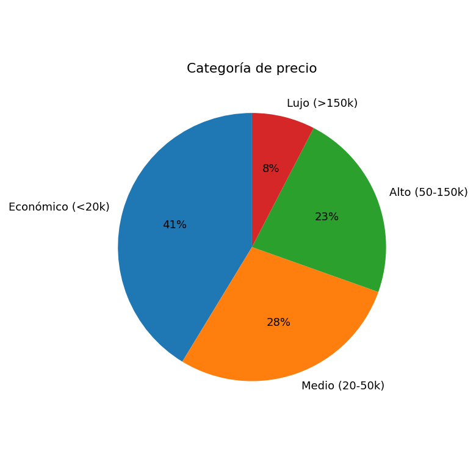
Reparto de los anuncios por rango de precio
2¿Por qué el promedio (66,298 USD) es 2.65 veces la mediana?
Porque siete anuncios superan los 150,000 USD y llegan a 750,000. Esos pocos precios altísimos arrastran el promedio, pero no la mediana. La realidad es más modesta: 38 anuncios (41%) cuestan menos de 20,000 USD, 26 (28%) entre 20,000 y 50,000, 21 (23%) entre 50,000 y 150,000 y solo 7 (8%) más de 150,000.
3¿Cuántos precios estaban mal, y qué pasó al corregirlos?
16 de 92 (17%). El programa había pegado dígitos de más: un apartamento del Vedado aparecía en 560,000 USD cuando el anuncio decía 60,000. El promedio original era de 159,776 USD; ya corregido, 66,298. La mediana casi no se movió (de 29,500 a 25,000), y esa estabilidad es la razón por la que la elijo como cifra de referencia.
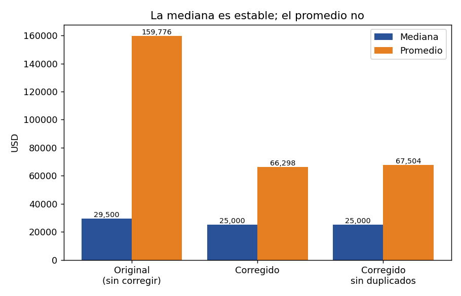
Mediana y promedio antes y después de corregir
4¿Qué otros problemas tienen los datos, y se repite el resultado en otra extracción?
Hubo 13 anuncios sin zona asignada, 12 sin descripción, 10 con una zona distinta al municipio que da Revolico, 4 con más de un precio en el texto y 2 casi duplicados. Ninguno cambia la cifra central: sin los duplicados, la mediana sigue en 25,000 USD.
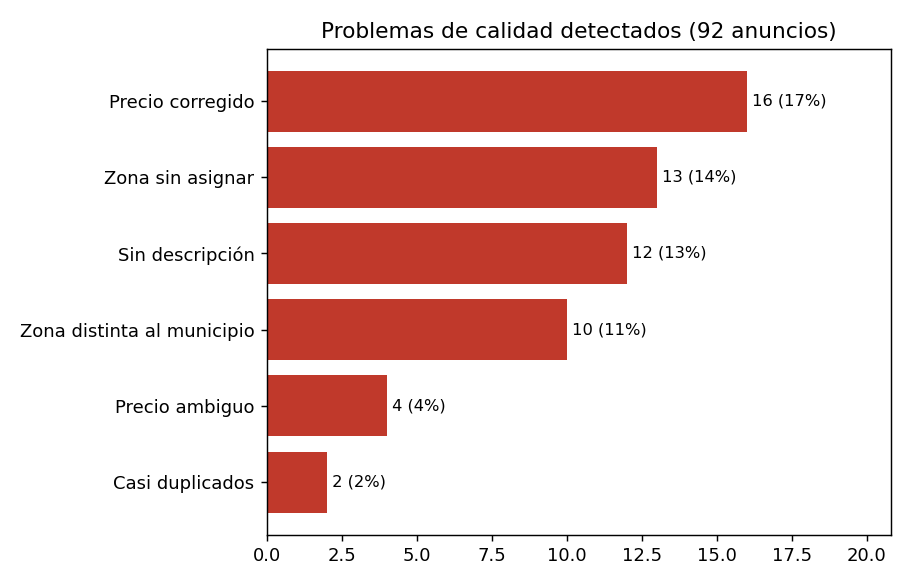
Problemas de calidad detectados
Una segunda extracción de 78 anuncios (solo título y precio, sin la misma revisión) da una mediana de 32,500 USD: la misma escala, con una diferencia de 30%. No son muestras independientes, así que sirve de contraste y no de confirmación.
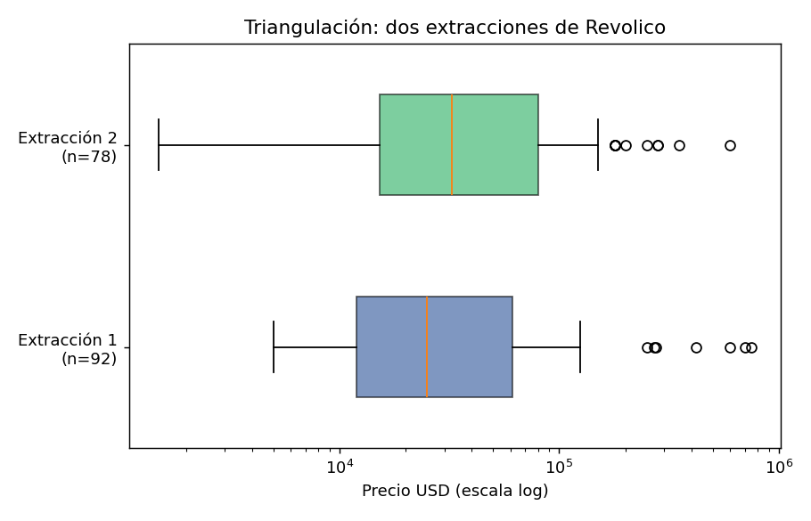
Dos extracciones de Revolico
5¿Qué tan fiable es entonces la muestra?
Fiable para ubicar niveles de precio y frágil para casi todo lo demás: una sola extracción de 92 anuncios, precios de oferta, varios municipios con 5 anuncios o menos y una parte de anuncios poco detallados. Todo lo que sigue se lee con esa cautela puesta.
Capítulo 2. El lugar: el barrio manda
Si el precio de una casa depende de algo, lo primero que se espera es la ubicación. Los datos lo confirman con más claridad que cualquier otro factor, y con algunas sorpresas en el mapa.
6¿Cuáles son las zonas más caras?
Por municipio: Plaza de la Revolución (mediana 60,000 USD, 19 anuncios), Habana del Este, que incluye Guanabo (57,500, 6 anuncios) y Playa (52,500, 20 anuncios). Si se mira la zona escrita en el anuncio, el Vedado encabeza con 80,000 USD (14 anuncios); el Vedado forma parte del municipio Plaza de la Revolución.
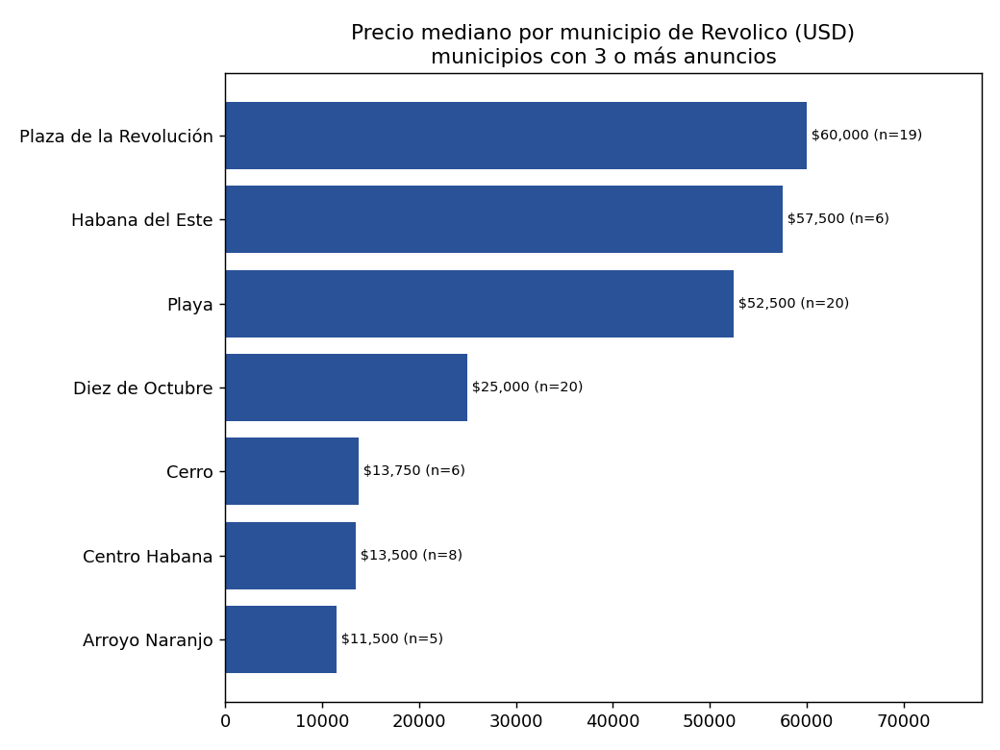
Precio mediano por municipio
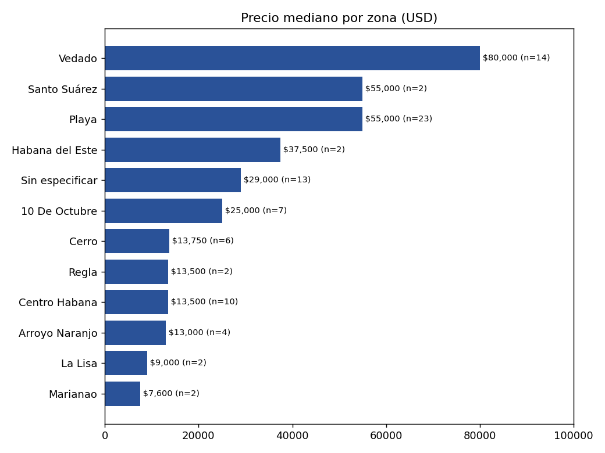
Precio mediano por zona escrita en el anuncio
7¿Y las más baratas?
Arroyo Naranjo (11,500 USD, 5 anuncios), Centro Habana (13,500, 8) y Cerro (13,750, 6). Marianao, La Lisa, Cotorro y otros tienen 1 o 2 anuncios, así que no concluyo nada sobre ellos. Dos inmobiliarias coinciden en que las zonas más económicas son Centro Habana, Diez de Octubre, Cerro, San Miguel del Padrón, Cotorro y Regla.
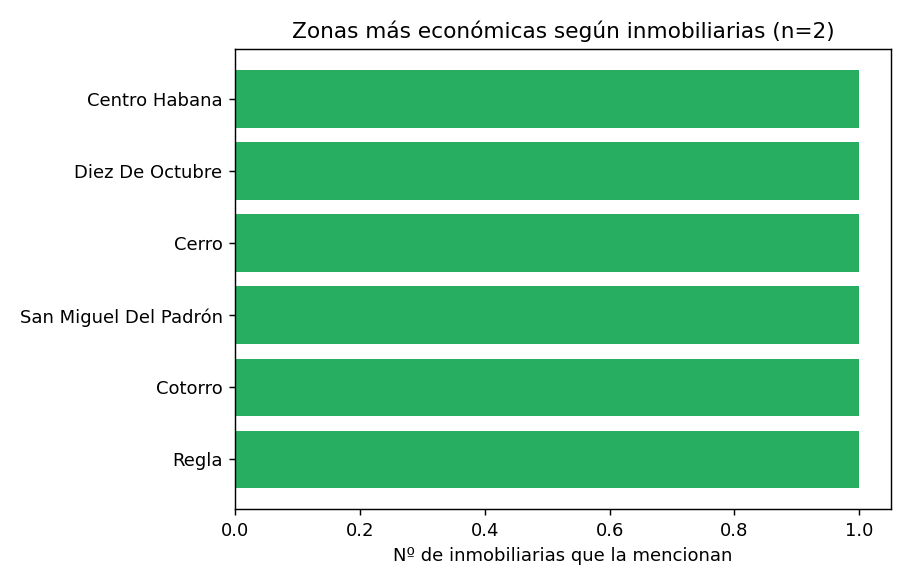
Zonas más económicas según las inmobiliarias
8¿Dónde se concentra la oferta?
Playa y Diez de Octubre tienen 20 anuncios cada uno y Plaza de la Revolución 19: suman 59 de 92 (64%). La oferta se agolpa donde más gente quiere vivir.
9¿Hay una diferencia real entre Centro Habana y Plaza de la Revolución?
Enorme: 13,500 frente a 60,000 USD de mediana, 4.4 veces más. La diferencia es estadísticamente clara (Mann-Whitney, p = 0.002), aunque con solo 8 y 19 anuncios.
10¿Las zonas de la periferia son más baratas?
No siempre, y aquí viene la sorpresa. Arroyo Naranjo es barato (11,500), pero Habana del Este, también periférico, está entre los tres más caros gracias a su costa. Agrupando, los tres municipios caros (Plaza, Playa y Habana del Este) tienen una mediana de 60,000 USD frente a 15,000 en el resto (45 y 47 anuncios; la diferencia de medianas va de 26,000 a 55,000 USD con 95% de confianza). Lo que separa los precios es el barrio, no la distancia al centro.
11¿Dentro de un mismo municipio los precios son parecidos?
Para nada. En Playa la mitad central va de 24,500 a 80,000 USD y en Plaza de 27,500 a 80,000. El barrio dice mucho, pero no alcanza para tasar una casa concreta.
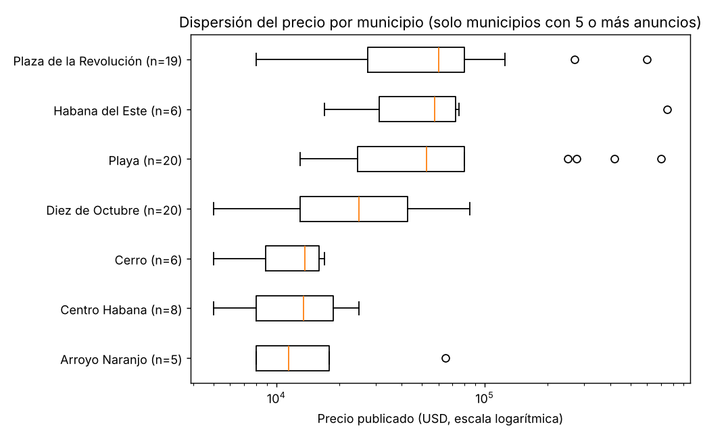
Dispersión del precio por municipio
Capítulo 3. La casa por dentro
Una vez fijado el barrio, queda la casa en sí: su tipo, su tamaño, sus extras. Aquí los datos hablan bajito, porque los anuncios dicen poco de la vivienda.
12¿Casa o apartamento: cuál cuesta más?
La casa independiente tiene una mediana de 27,000 USD (38 anuncios), el apartamento 17,500 (46) y la biplanta 47,500 (solo 6). La diferencia entre casa y el resto apenas cruza el umbral estadístico (p = 0.04) y su intervalo incluye el cero: es evidencia débil, y mezclada con la zona.
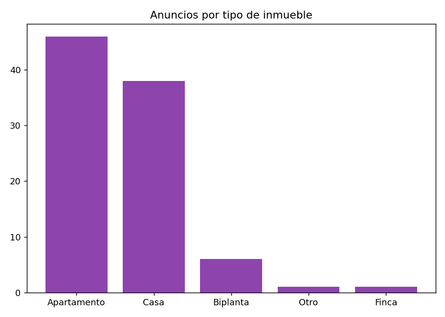
Anuncios por tipo de vivienda
13¿Pesan más las habitaciones o los baños?
No se puede decir. Solo 39 anuncios indican cuántos cuartos tienen y 24 cuántos baños. En esos anuncios, ambos se asocian con un precio mayor (correlación de Spearman 0.56 con cuartos y 0.61 con baños). Pero los anuncios que dan esos datos son los más detallados, y no representan a todos.
14¿Cuánto suman el patio, la terraza o el balcón?
Nada que se pueda afirmar. Patio (15 anuncios): 17,000 frente a 25,000 USD, p = 0.21. Terraza (21): 45,000 frente a 25,000, p = 0.29. Balcón (13): 25,000 en ambos casos. Jardín (6) y piscina (3) tienen demasiado pocos anuncios.
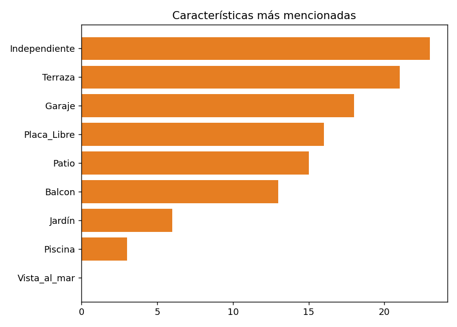
Características más mencionadas en los anuncios
15¿El estado de la vivienda se refleja en el precio?
No puedo responderlo. Solo 5 anuncios dicen "remodelada" y ninguno habla de reparar o de mal estado. Los vendedores no describen el estado de forma sistemática, y ese silencio ya es un hallazgo sobre lo que un anuncio calla. Las fotos de los anuncios sí lo muestran: del patio con jardín y la cocina nueva a las paredes envejecidas y los locales sin terminar. Ese contraste es justo lo que el texto no dice.
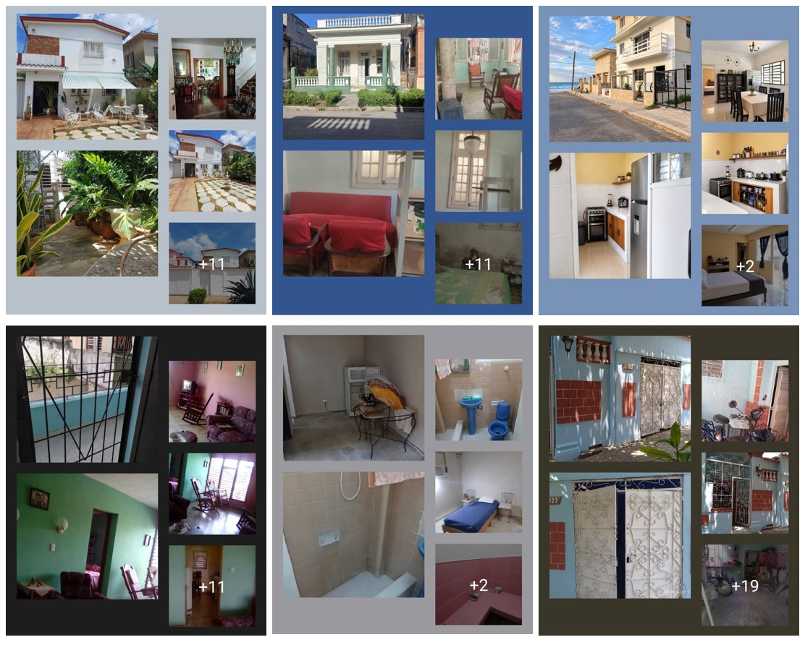
Seis viviendas de anuncios de una inmobiliaria en Facebook
Capítulo 4. Los servicios: el gran ausente
Aquí está la tensión central de la historia. Las personas entrevistadas insisten en que lo que más importa es el agua y la corriente. Los anuncios, en cambio, hablan de otras cosas.
16¿Qué servicios mencionan los anuncios?
El gas en 28% de los anuncios, el teléfono en 25%, el agua en 21%, el garaje en 20%, el patio en 16% y la luz en 15%. Internet no aparece en ninguno.
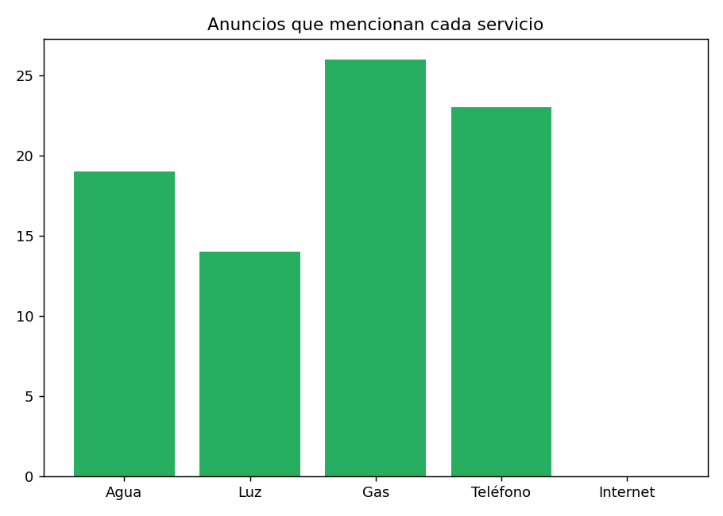
Anuncios que mencionan cada servicio
17¿Gas, agua y luz suben el precio?
En los datos, no. El gas (26 anuncios, p = 0.16) y la luz (14, p = 0.81) no marcan diferencia. El agua incluso aparece asociada a precios más bajos (14,000 frente a 25,000 USD, p = 0.04), pero 13 de los 19 anuncios que la mencionan están fuera de las zonas caras: es un efecto de la zona. Y el anuncio no dice si el agua llega todos los días, que es justo lo que las personas valoran.
18¿El garaje es decisivo?
Con garaje la mediana es 52,500 USD y sin garaje 24,500 (p = 0.007), pero 12 de los 18 anuncios con garaje están en zonas caras. Dentro de esas zonas la diferencia es pequeña (60,000 frente a 55,000). Fuera de ellas solo hay 6 anuncios con garaje, aunque van en la dirección esperada (35,000 frente a 12,000). Está asociado a precios altos, pero no puedo separarlo de la zona.
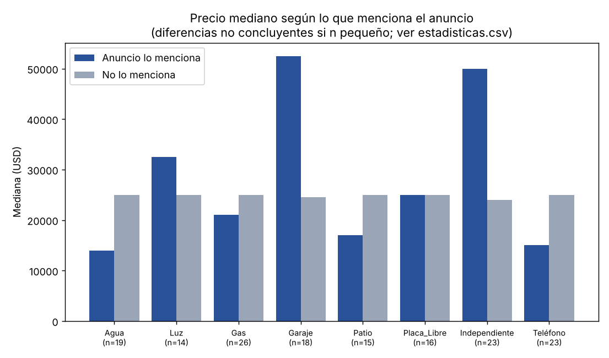
Precio mediano con y sin cada característica
19¿Importan la placa libre, el teléfono, el amoblado o la energía solar?
No se nota diferencia. Placa libre (16 anuncios): 25,000 en ambos grupos. Teléfono (23): p = 0.09. Amoblado (9): 16,000 frente a 25,000, p = 0.71. Solo un anuncio de 92 menciona algo relacionado con energía solar o respaldo (panel, inversor, planta o batería), así que no se puede estimar su efecto.
20¿Pesa más la zona o los servicios?
La zona, por mucho. En un modelo exploratorio sobre el logaritmo del precio, una variable de zona cara explica por sí sola alrededor de 30% de la variación (R² ajustado 0.30), el tipo de vivienda 8% y el número de servicios mencionados casi nada (1%). Con zona y tipo juntos se llega a 38%; agregar los servicios no lo mejora. En el modelo, estar en una zona cara multiplica el precio por unas 3.5 veces. Dos advertencias: la variable de zona se definió viendo los datos, así que es optimista, y los anuncios no registran lo que la gente más valora (agua diaria, luz estable).
También probé con clustering (K-Means con k = 3) sobre precio, cuartos, baños y servicios, esperando encontrar "tipos de mercado". No los encontré: separó 57 anuncios poco detallados, 30 detallados y 5 de lujo. Los grupos reflejan cuánta información da el anuncio, no tipos de vivienda; por eso no lo uso como explicación.
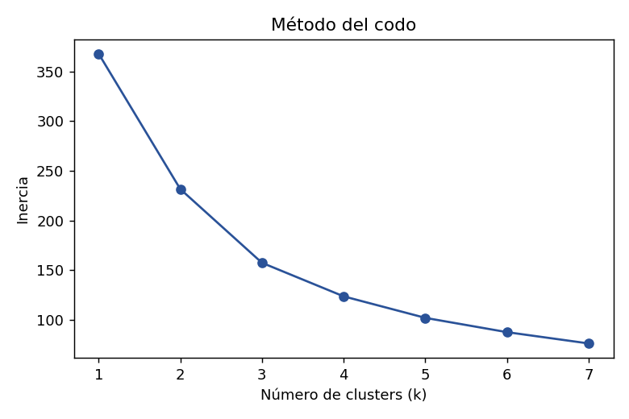
Método del codo para elegir el número de segmentos
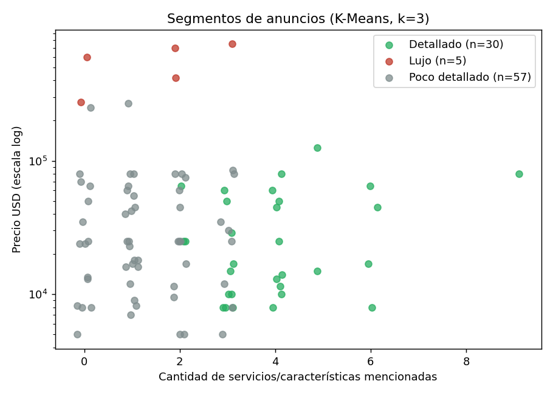
Segmentos del clustering
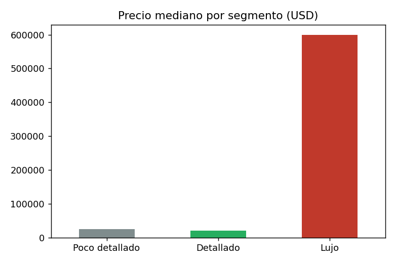
Precio mediano por segmento
Capítulo 5. Detrás del anuncio
Detrás de cada anuncio hay una razón para vender. Las inmobiliarias la conocen. Los anuncios casi nunca la cuentan.
21¿Qué porcentaje de anuncios menciona la emigración?
Ninguno: 0 de 92. Revisé los textos con palabras clave (emigrar, viajar, salir del país) y no hubo coincidencias reales.
22¿Por qué se vende, según las inmobiliarias?
Cuatro de las cinco citan la emigración o la reunificación familiar como motivo principal. También mencionan necesidad de dinero, querer una casa más grande, personas mayores que sienten la casa grande y comprar otra vivienda.
23¿"Negociable", "oportunidad" y "permuta" indican urgencia?
No hay datos suficientes. Cinco anuncios dicen "negociable" y su mediana es de 10,000 USD frente a 25,000 (p = 0.22, no concluyente). "Oportunidad" aparece en 6 textos y "urgente" en ninguno; "excelente" y "placa libre" aparecen en 13 anuncios cada uno (14%). La permuta solo se menciona en 2 anuncios (2%), y una inmobiliaria dice que casi nadie permuta ya. Los vendedores casi no muestran prisa: venden con un vocabulario suave.
24¿Por qué las inmobiliarias hablan de emigración y los anuncios no?
Mi explicación, que no puedo probar con estos datos: un anuncio vende, no explica, y muestra lo que cabe en una frase (metros, cuartos, gas, teléfono). Los motivos de fondo se quedan fuera. Por eso el anuncio no sirve para estudiar este factor, y esa diferencia es en sí un hallazgo sobre la calidad de la fuente. Como la nueva ley elimina la confiscación por salida del país, sería interesante volver a medir esto cuando lleve tiempo en vigor.
Capítulo 6. Lo publicado, lo real y lo que piensa la gente
Llegó el momento de cruzar las tres fuentes: lo que dicen los anuncios, lo que cuentan las inmobiliarias y lo que opinan 35 personas.
25¿Cuánto baja el precio al cerrar, y coinciden los anuncios con lo que dicen las inmobiliarias?
Dos inmobiliarias coinciden en una rebaja de alrededor de 10% (una dice entre 5% y 15%). Para un anuncio de 25,000 USD, el cierre rondaría los 22,500. Es una estimación de las agencias, no una medición: no tengo precios de cierre. Una de ellas dio cifras de cierre por zona: 50,000 a 70,000 USD en Playa y Plaza, y 15,000 a 20,000 en Centro Habana, Diez de Octubre y Cerro. Los anuncios de Playa (52,500) y Plaza (60,000) caen dentro del rango; Centro Habana (13,500) y Cerro (13,750) quedan algo por debajo, y Diez de Octubre (25,000) por encima. Es el contraste con una sola agencia, no una validación.
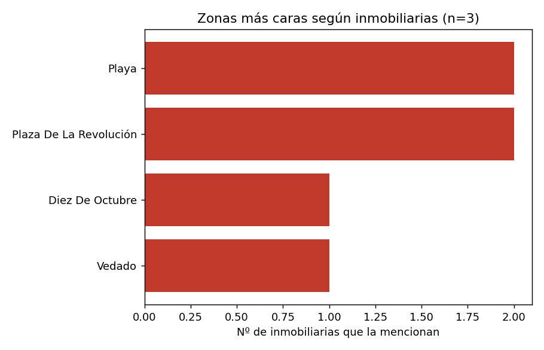
Zonas más caras según las inmobiliarias
26¿Qué obstáculos legales frenan las ventas?
Según una inmobiliaria: títulos no actualizados o que no coinciden con la casa (ampliaciones sin registrar), herencias sin declaratoria de herederos, casas sin inscribir en el Registro de la Propiedad y litigios o cargas (usufructos, embargos). Otra señala el cheque de gerencia como forma de pago. La Ley 187/2026, según la prensa, añade notario y pago sin efectivo. Son testimonios: los anuncios no los muestran, y por eso el precio publicado no incluye el costo ni el riesgo del trámite.
27¿Lo que se ofrece es lo que la gente prefiere?
No del todo. 28 de 35 personas (80%) prefieren la casa independiente; solo 3 el apartamento y 4 la biplanta. En Revolico, apenas 41% de los anuncios son casas y 50% apartamentos. Una inmobiliaria dice tener 65% de casas en su catálogo de 230 viviendas, pero es una cifra de la entrevista que no he podido verificar.
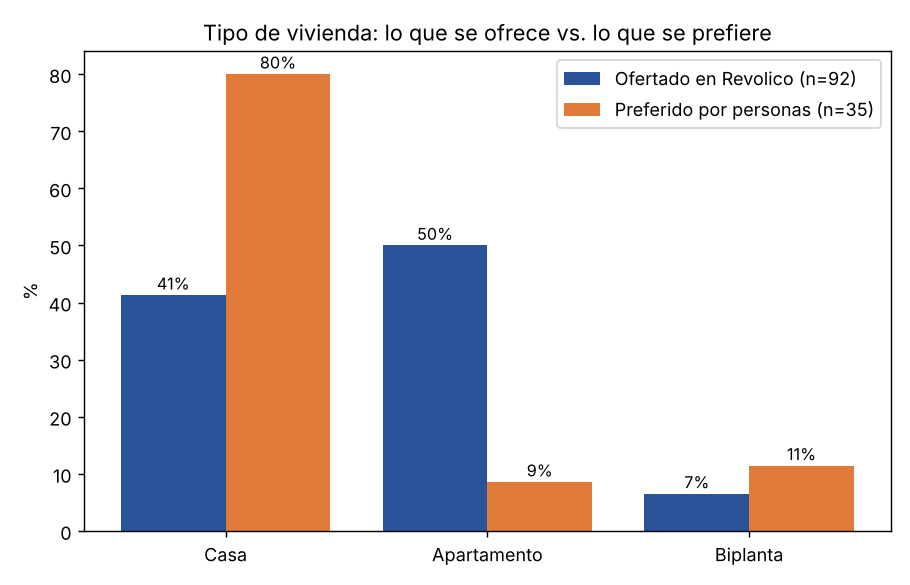
Tipo de vivienda: ofertado frente a preferido
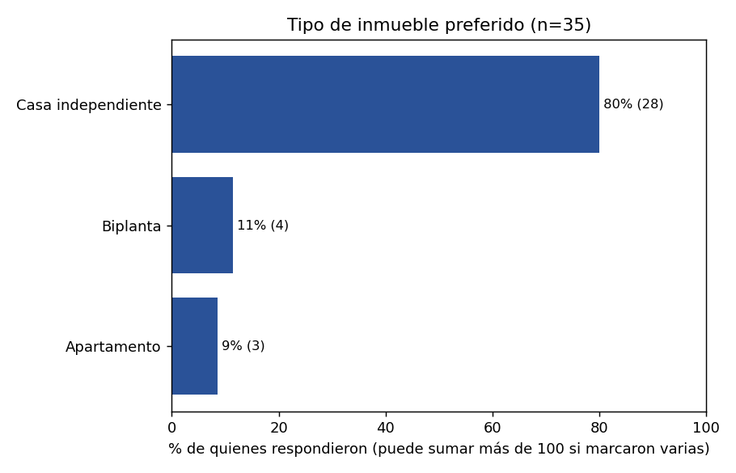
Tipo de vivienda que prefieren las personas
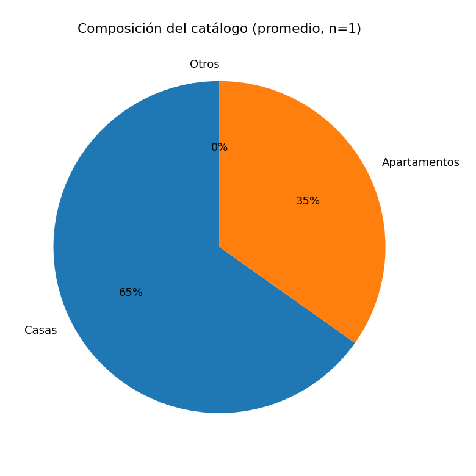
Composición del catálogo de una inmobiliaria
28¿Lo que valoran las personas coincide con lo que dicen los anuncios?
No. Las personas ponen por delante los servicios básicos (18 de 35) a la ubicación (13 de 35), y como servicio indispensable el agua (23 de 34), frente a la luz (7) y el gas (7). En los anuncios aparece más el gas (28%) y el teléfono (25%) que el agua (21%) o la luz (15%), e Internet no aparece. Este es quizás el hallazgo más interesante del trabajo: el mercado publica lo que es fácil de decir, no lo que más pesa para quien compra.
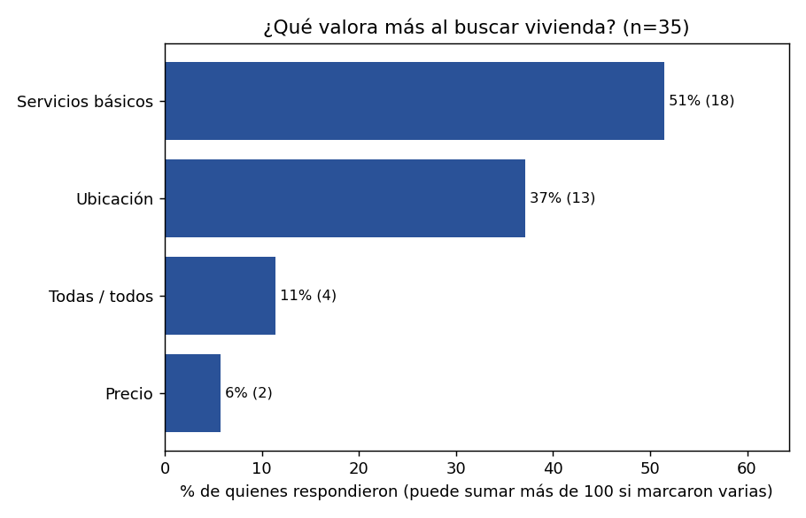
Qué valoran las personas al buscar vivienda
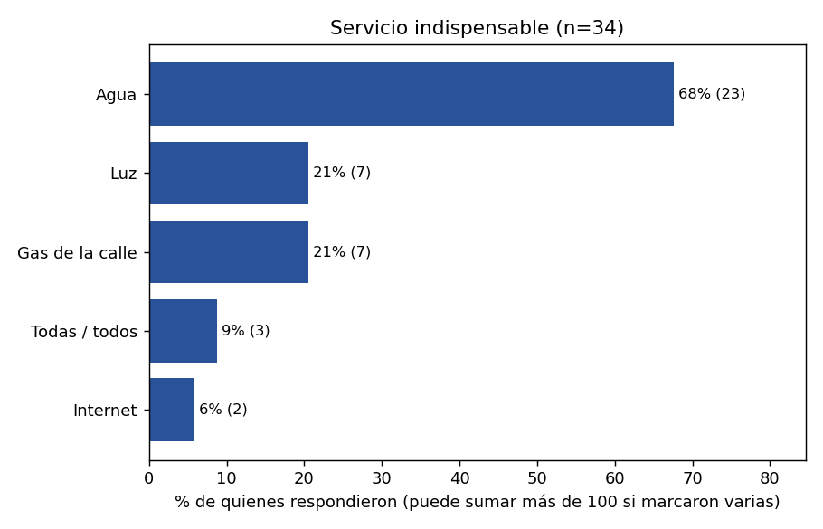
Servicio indispensable según las personas
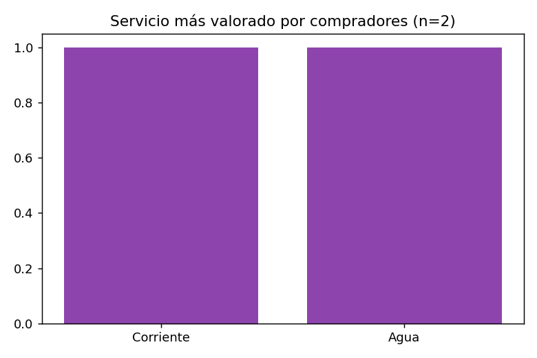
Servicio más valorado según las inmobiliarias
29¿La gente sabe cuáles son las zonas más caras, y qué cree que pasa con los precios?
Lo sabe. Playa (18 de 33) y Vedado (17 de 33) quedan casi empatados como la zona más cara. En los datos, el Vedado tiene la mediana más alta (80,000 USD) y Playa le sigue (55,000). Sobre la evolución, 15 de 33 creen que los precios suben, 9 que bajan y 9 que se mantienen: no hay consenso claro, y no puedo contrastarlo porque tengo una sola extracción.
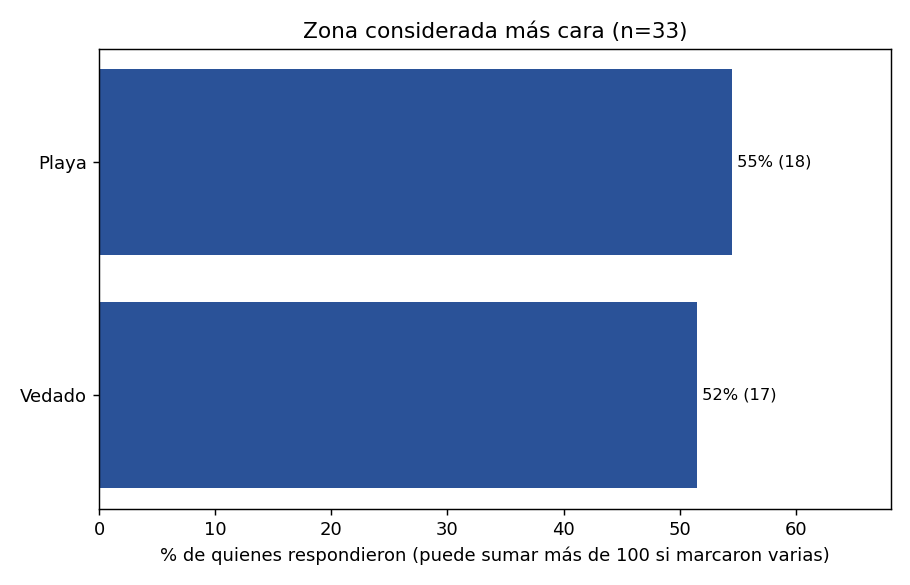
Zona que las personas creen más cara
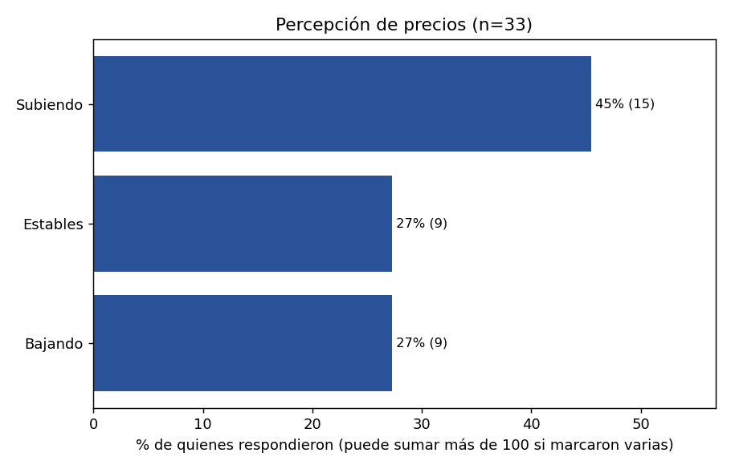
Cómo ven las personas la evolución de los precios
30¿Qué determina, entonces, el precio de una vivienda en La Habana?
La respuesta está en las páginas que siguen.
Análisis final: tres fuentes, una misma historia
Al poner las tres fuentes una al lado de la otra aparecen coincidencias, contradicciones y alguna sorpresa.
Donde las tres coinciden. El lugar importa más que cualquier otra cosa. Los anuncios lo muestran (60,000 USD en las zonas caras frente a 15,000 en el resto), las inmobiliarias lo dicen (Playa y Plaza, entre 50,000 y 70,000 USD de cierre) y las personas lo saben (Playa y Vedado, casi empatados como la zona más cara).
Donde se contradicen. Las personas dicen que lo más importante son los servicios básicos, sobre todo el agua. Los anuncios casi no hablan de agua ni de luz, y cuando lo hacen no se refleja en el precio. Las inmobiliarias, por su parte, dicen que la emigración es el motivo principal de venta, y ni uno de los 92 anuncios la menciona.
Lo que sorprendió. Que el promedio fuera una mentira (160,000 USD antes de corregir); que Habana del Este, en la periferia, fuera una de las zonas más caras; que el garaje pareciera decisivo hasta que lo miré dentro de cada zona; y que la gente quiera casa independiente mientras la mitad de la oferta son apartamentos.
Lo que explica la brecha. Un anuncio es publicidad, no un informe. Muestra lo que cabe en una frase (zona, metros, gas, teléfono) y calla lo difícil de medir: si el agua llega, en qué estado está la casa, por qué se vende, qué trámites faltan. El precio publicado refleja la zona porque la zona es lo que sí se dice.
Conclusión: ¿qué determina realmente el precio?
La respuesta honesta tiene varios niveles, del más firme al menos firme.
El barrio es el factor más claro. Los municipios caros (Plaza de la Revolución, Playa y Habana del Este) tienen una mediana de 60,000 USD frente a 15,000 en el resto, y una variable de zona explica por sí sola cerca de un tercio de la variación de los precios.
El tipo y el tamaño de la vivienda vienen después. Casas independientes, biplantas y viviendas con más cuartos y baños se asocian con precios mayores, pero con evidencia más débil y con datos incompletos.
El garaje y los servicios que menciona el anuncio no se pueden separar de la zona. El garaje está asociado a precios altos porque abunda en barrios caros. Los servicios básicos no marcan diferencia en los anuncios, pero no porque no importen: los anuncios no registran si el agua llega todos los días ni si la corriente es estable.
Hay factores que existen pero no se ven en el precio publicado. La emigración como motivo de venta, el estado de la vivienda, la urgencia del vendedor y los problemas legales aparecen en las entrevistas y no en los anuncios. Y lo que se pide no es lo que se paga: según las inmobiliarias, el cierre es alrededor de 10% menor.
Lo que no pude concluir: el efecto de cada servicio por separado, el estado de la vivienda, la urgencia del vendedor, el precio real de cierre y la evolución en el tiempo.
Lo que no sé
Muestra pequeña: 92 anuncios de una sola extracción, y varios municipios con 5 anuncios o menos.
Precios de oferta, no de cierre.
Entrevistas por conveniencia, con dos versiones del cuestionario para inmobiliarias; solo una dio cifras de cierre. Las inmobiliarias tienen interés comercial.
Unas 25 comparaciones estadísticas con grupos pequeños; algunas "significativas" pueden ser casualidad.
Solo una inmobiliaria compartió su catálogo; las cifras de catálogo de las demás son lo que dijeron en la entrevista.
No hay datos de Facebook ni Telegram.
Y ahora, ¿qué sigue?
Para una segunda etapa haría falta anotar la superficie, la antigüedad y el precio final de cierre, repetir la extracción en otra fecha y entrevistar a más inmobiliarias con un cuestionario único. El informe técnico explica el método completo, y el repositorio contiene los datos, el código y los gráficos para reproducir cada cifra.
Epílogo: lo que aprendí
Empecé buscando una lista de características que explicara el precio de una casa, y terminé aprendiendo algo más útil: que un dato no vale por lo que dice, sino por cuánto puedes confiar en él. El primer promedio que calculé estaba equivocado, la mejor respuesta resultó ser una mediana, y la variable más importante no fue el garaje ni la terraza, sino el barrio.
También aprendí a escuchar lo que los datos no dicen. Los anuncios callan el agua que no llega, la emigración que empuja a vender y el trámite que frena el cierre, y justo eso es lo que las personas y las inmobiliarias cuentan cuando se les pregunta. La próxima vez que alguien diga cuánto vale una casa, voy a preguntarle primero dónde está, y después, qué es lo que el anuncio no cuenta.
¿Te sirvió? Compártela. Cada persona que la lea ayuda a que más gente entienda el mercado de la vivienda.